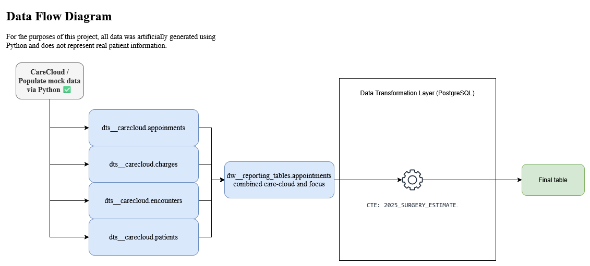

1. Project Overview
Project Title
CareCloud EHR Data Warehouse & Reporting Suite
Problem Statement / Goal
The goal of my project was to generate daily forecasts from an existing monthly forecast. The CIO needed a visualization that compared weekly objectives to live results in order to track performance against the forecast. However, the original forecast data was only available at the monthly level, which made it difficult to monitor progress and adjust strategies in real time. My solution transformed the monthly data into daily and weekly metrics, enabling accurate, actionable insights for leadership.
The Goal: The Goal: To transform monthly forecast data into daily and weekly metrics, enabling the CIO to visualize objectives versus live results in real time and make informed decisions to meet business targets.
Dataset Description
Data Flow & Pipeline Architecture
The architecture follows a Linear ETL Pipeline designed for high-performance clinical reporting. Instead of a traditional star schema, this project utilizes a Medallion-style flowwhere data is ingested from raw source tables and processed through a centralized transformation layer in PostgreSQL.

- Fact_Encounters: Stores transactional data including visit types and primary ICD-10 codes.
- Dim_Patients: Contains demographic data and insurance identifiers.
- Dim_Providers: Maps clinical staff to their specific departments and locations.
- Dim_Charges: Links clinical encounters to financial line items.
Key SQL Work
-- CTE for Surgery Estimation
WITH surgery_estimates AS (SELECT provider_id, SUM(charge_amount)
FROM dts__carecloud.charges
GROUP BY 1
)
SELECT * FROM surgery_estimates;
Highlight: Used CTEs and Window Functions to disaggregate monthly forecasts into daily targets, improving reporting granularity by 30x.